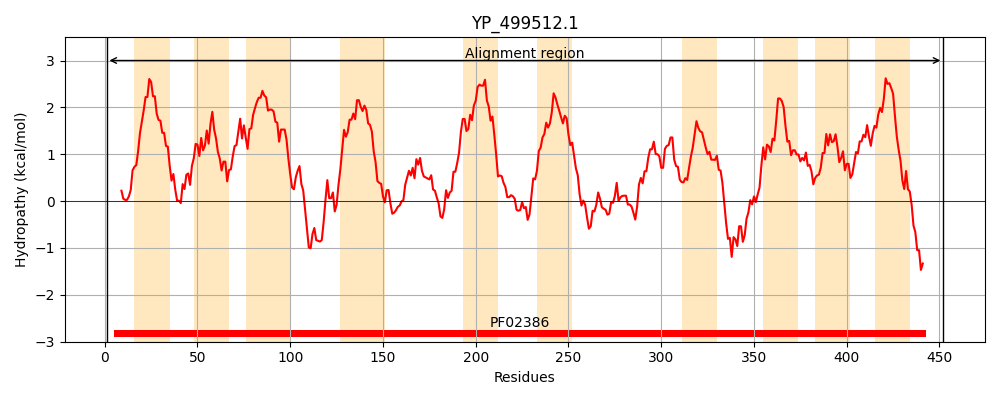
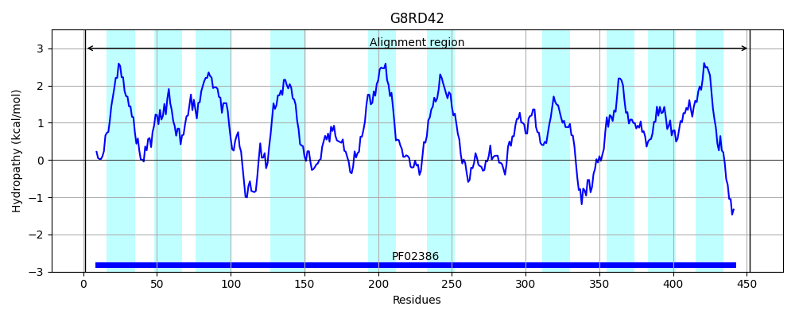
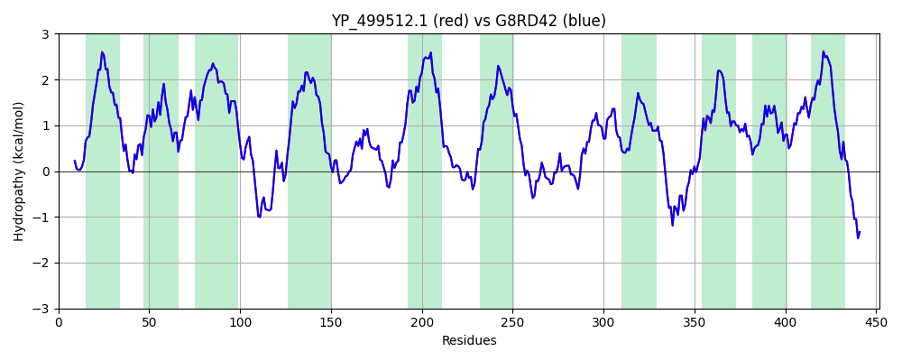

Hit Accession: G8RD42
Hit TCID: 2.A.38.4.6
Hit Description: gnl|BL_ORD_ID|4867 gnl|TC-DB|G8RD42|2.A.38.4.6 Potassium uptake protein , integral membranecomponent, KtrD OS=Staphylococcus aureus subsp. aureus M013 GN=M013TW_0950 PE=4 SV=1
Mach Len: 452
e:0.000000
Query TMS Count : 10
Hit TMS Count: 10
TMS-Overlap Score: 10.500000
Predicted Substrates:CHEBI:8345;potassium(1+)
BLAST Alignment:
Score: 2244 , Bit scores: 868 bits, E-value: 0.0e+00, Alignment length: 452, Percentage identity: 100
Query: 1 MSIFSQFLKRSSPQQGIVLYYIVAIVIAFLLLNLPYVHKPGVEVNPIDTLFVAVSGISVTGLSPISIVDTYSTFGQLIILVILNIGGIGVMAIGTMLWVVLGKHIGIRERQLIMLDNNKNTMSGTVKLIIDIVKSIFVIELVGAMLLAFYFYRDNPDLKYAIMQGVFVSISATTNGGLDITGKSLIPYAHDYFVQAIVIFLIILGSIGFPVLLEVKAYIQNRVTNFRFSLFTKITTSTYLFLFIVGVLAILLFEHNHAFKGLSWHQSLFYSLFQSATTRSAGLQTIDVTTLSDPTNIIMGILMFIGSSPSSVGGGIRTTTFAILILFLINFSNNADKTSIKVYNREVHIMDIQRSFAVFTMATILTFLGMLIISATENGKLTFLQVFFEVMSAFGTCGLSLGVTSDISDISKVVLMILMFIGRVGLISFIIMIAGRREPDKFHYPKERIQIG 452
MSIFSQFLKRSSPQQGIVLYYIVAIV+AFLLLNLPYVHKPGVEVNPIDTLFVAVSGISVTGLSPISIVDTYSTFGQLIILVILNIGGIGVMAIGTMLWVVLGKHIGIRERQLIMLDNNKNTMSGTVKLIIDIVKSIFVIELVGAMLLAFYFYRDNPDLKYAIMQGVFVSISATTNGGLDITGKSLIPYAHDYFVQAIVIFLIILGSIGFPVLLEVKAYIQNRVTNFRFSLFTKITTSTYLFLFIVGVLAILLFEHNHAFKGLSWHQSLFYSLFQSATTRSAGLQTIDVTTLSDPTNIIMGILMFIGSSPSSVGGGIRTTTFAILILFLINFSNNADKTSIKVYNREVHIMDIQRSFAVFTMATILTFLGMLIISATENGKLTFLQVFFEVMSAFGTCGLSLGVTSDISDISKVVLM+LMFIGRVGLISFIIMIAGRREPDKFHYPKERIQIG
Sbjct: 1 MSIFSQFLKRSSPQQGIVLYYIVAIVVAFLLLNLPYVHKPGVEVNPIDTLFVAVSGISVTGLSPISIVDTYSTFGQLIILVILNIGGIGVMAIGTMLWVVLGKHIGIRERQLIMLDNNKNTMSGTVKLIIDIVKSIFVIELVGAMLLAFYFYRDNPDLKYAIMQGVFVSISATTNGGLDITGKSLIPYAHDYFVQAIVIFLIILGSIGFPVLLEVKAYIQNRVTNFRFSLFTKITTSTYLFLFIVGVLAILLFEHNHAFKGLSWHQSLFYSLFQSATTRSAGLQTIDVTTLSDPTNIIMGILMFIGSSPSSVGGGIRTTTFAILILFLINFSNNADKTSIKVYNREVHIMDIQRSFAVFTMATILTFLGMLIISATENGKLTFLQVFFEVMSAFGTCGLSLGVTSDISDISKVVLMVLMFIGRVGLISFIIMIAGRREPDKFHYPKERIQIG 452 | Protein Hydropathy Plots: |
|---|
|  |  |
Pairwise Alignment-Hydropathy Plot:
|
|---|
|  |